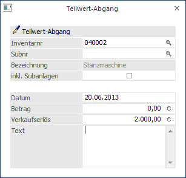
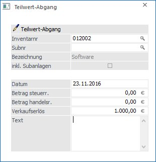
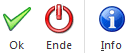
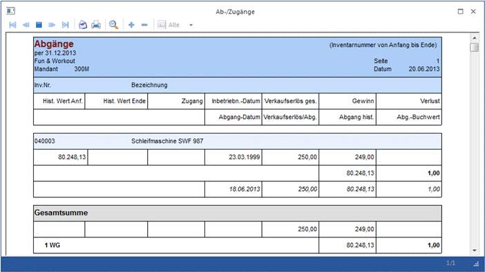

Von einem Teilwertabgang spricht man, wenn nicht das komplette Anlagegut, sondern nur ein Teil davon aus dem Betrieb ausscheidet.
Um einen Teilwertabgang durchzuführen, gehen Sie in den Menüpunkt
1 Buchen
1 Teilwertabgang

Ø Inventarnummer
Hier geben Sie die Inventarnummer des Anlagegutes laut Anlage im Anlagenstamm ein. Zur Erleichterung können Sie wieder unsere Matchcode-Suchfunktion nützen (Drücken der F9-Taste oder Anklicken der kleinen Lupe hinter dem Eingabefeld).
Ø Subnummer
Eingabe der Subnummer, falls Sie für dieses Anlagegut eine Subnummer im Anlagenstamm angelegt haben.
Ø inkl. Subanlagen
Die Checkbox "inkl. Subanlagen" kann bei Hauptanlagen, für die auch Subanlagen existieren, aktiviert werden. Dies bewirkt, dass alle Subanlagen ebenfalls abgehen. Der eingetragene Verkaufserlös wird dabei auf alle Anlagen auf Basis des Anschaffungswertes gleichmäßig aufgeteilt.
Wie beim Verkaufserlös wird hier der Abgangsbetrag auf Basis des Anschaffungswertes gleichmäßig aufgeteilt.
Ø Datum
Eingabe des Datums, wann der Teilwertabgang stattgefunden hat. Dieses Datum ist besonders wichtig für die anteilige Abgangs-AfA-Berechnung aufgrund der im Anlagenstamm hinterlegten Abgangsregel.
Achtung
Wenn bei einem Teilwertabgang der Erste des Monats als Abgangsdatum eingegeben wird, wird die Abgangs-AfA nur bis zum Vormonat gerechnet.
Ø Betrag
Eingabe des Betrages, mit welchem die Anlage abgeht (Abgangswert inkl. Abgangs-AfA). Aus dem Verhältnis zwischen Abgangswert und Anschaffungswert wird ein Prozentsatz errechnet, der das Verhältnis der normalen Jahresabschreibung zur Teilwertabschreibung angibt. Bei Eingabe eines Minusbetrages wird der Wert des Anlagegutes erhöht.
Ø Verkaufserlös
Geben Sie hier den Verkaufserlös oder die Versicherungsentschädigung für das abgegangene Wirtschaftsgut ein.
Anhand des Verkaufserlöses und des Abgangsbuchwertes wird der Gewinn bzw. Verlust ermittelt, welcher auf der Liste der Abgänge ausgewiesen wird,
Ø Text
Hier kann ein 255stelliger Buchungstext eingegeben werden. Dieser Text wird in den Auswertungen Historien-Journal und Anlagestammblatt angedruckt.
Hinweis für Österreich:
Für Mandanten mit dem Länderkennzeichen A kein ein Teilwert-Abgang-Betrag steuerrechtlich und handelsrechtlich eingegeben werden.

Ø Betrag steuerr.
Eingabe des steuerrechtlichen Betrages, mit welchem die Anlage abgeht (Abgangswert inkl. Abgangs-AfA). Aus dem Verhältnis zwischen Abgangswert und Anschaffungswert steuerrechtlich wird ein Prozentsatz errechnet, der das Verhältnis der normalen Jahresabschreibung zur Teilwertabschreibung angibt. Bei Eingabe eines Minusbetrages wird der Wert des Anlagegutes erhöht.
Ø Betrag handelsr.
Eingabe des handelsrechtlichen Betrages, mit welchem die Anlage abgeht (Abgangswert inkl. Abgangs-AfA). Aus dem Verhältnis zwischen Abgangswert und Anschaffungswert handelsrechtlich wird ein Prozentsatz errechnet, der das Verhältnis der normalen Jahresabschreibung zur Teilwertabschreibung angibt. Bei Eingabe eines Minusbetrages wird der Wert des Anlagegutes erhöht.
Buttons

Ø OK
Durch Drücken des OK-Buttons wird die Abgangsbuchung abgestellt.
Ø Ende
Mit dem Ende-Button wird das Fenster geschlossen (ohne dass Buchungen gespeichert oder abgestellt werden).
Ø Info
Nach Drücken des Info-Buttons werden die wesentlichsten Werte des aktiven Anlagegutes angezeigt. (Anschaffung, AfA, TW-Abgang, letzte Änderung, usw.)
Beispiel
Sie haben ein Anlagegut mit einem Anschaffungswert von € 40.000,--in Ihrem Betrieb. ND: 5Jahre
Ein Teil dieses Anlagegutes scheidet in der 2. Jahreshälfte (z. B. durch Verkauf eines Teiles der Anlage) aus.
Abgangswert: € 10.000,--
Das bedeutet in diesem Fall, dass 25% von diesem Anlagegut abgegangen sind.
AfA:
Die Abgangsabschreibung umfasst nur jenen Teil der AfA, der mit dem Abgang verbunden ist. Normale Abschreibung und Abgangsabschreibung stehen im gleichen Verhältnis zueinander wie Anschaffungswert und Abgangswert.
normale AfA: 20%
€ 8.000,--
Da das Gut in der 2. Jahreshälfte ausgeschieden ist und als Abgangsregel "Halbjahres-AfA" hinterlegt ist, nimmt man die gesamte Jahresabschreibung als Basis für die Berechnung der Abgangs-AfA.
25 % Abgangsabschreibung
€ 2.000,--
Durch diesen Teilwertabgang ändert sich dann natürlich auch der Buchwert, Restbuchwert etc. dieses Anlagegutes.
Nach der Abgangs-AfA ergibt sich daher ein neuer Buchwert von € 30.000,--, eine neue Jahres-AfA von € 6.000,-- und nach erfolgter Jahresabschreibung der Restbuchwert von € 24.000,--.
Wenn Sie sich ein Anlagenverzeichnis ausdrucken, haben Sie die Informationen des Teilwertabganges automatisch verzeichnet.

Stornierung eines Teilwertabganges
Ein Teilwertabgang kann - solange der Abschreibungslauf noch nicht durchgeführt wurde - im Menü "Anlagenstamm", Register "Entwicklung", über den Button "Entfernen" storniert werden.
Hinweis
Bei einem Teilwertabgang wird geprüft, ob es an einem jüngeren Datum bereits eine Umbuchung gibt und eine Meldung ausgegeben. Die Umbuchung muss dann erst gelöscht werden, bevor der Teilwertabgang gebucht werden kann.